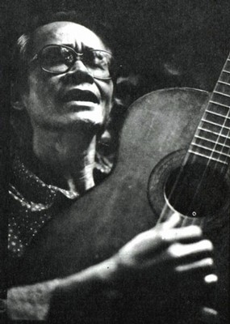

...Một đêm tình cờ. .. Mặt trận Đường Chín - Nam Lào (1971)... Trong căn hầm kèo bên dòng sông Sêbănghiêng... tôi - phóng viên chiến trường, đang bám theo tiểu đoàn thông tin của sư đoàn 308 do anh hùng quân đội Chu Văn Mùi làm tiểu đoàn trưởng.. . Nghe, nghe trộm - vâng, lúc đó gọi là nghe trộm - đài Sài Gòn, tình cờ “gặp" Trịnh Công Sơn qua giọng hát Khánh Ly.. . Diễm xưa... "Mưa vẫn mưa bay trên tầng tháp cổ - làm sao em biết bia đá không đau... ngày sau sỏi đá cũng cần có nhau...". Quỷ thật! Giai điệu ấy và lời ca ấy tự nhiên "ghim” lại trong tâm tưởng tôi ngay từ phút bất chợt ấy... Rồi Như cánh vạc bay... Quái thật? ... cảm nhận bất chợt, những bài hát rất mượt mà, đắm đuối ấy không thuộc chủng loại èo uột, rên rỉ, nỉ non mà thời ấy người ta vẫn quen gọi chung là "nhạc vàng". Ừ, thì có buồn đấy, đau đấy, quặn thắt nữa đấy... nhưng còn cái gì lành mạnh nảy nở trong đó. Hình như là cái đẹp. Cái đẹp trong câu nhạc. Cái đẹp trong ca từ, cả xác chữ lẫn hồn thơ. Bảng lảng, lờ mờ, khó phân định cho đúng nghĩa, nhưng rõ ràng là đẹp, đẹp làm sao... và cũng hơi ma quái thế nào. Tôi lớn lên ở vùng đồng bằng sông Mã, vẫn thường nghe tiếng vạc kêu sương. Nào có thấy con vạc đâu, mà tiếng vạc thì rất nhớ. Con vạc xa, thật xa, mà tiếng vạc rơi trong thăm thẳm đêm xưa tịch mịch thì lại gần, thật gần. Sự thật cuộc đời, ít ra đối với tôi cho tới lúc đó - năm tôi hai mươi tuổi, - là như vậy. Mấy ca khúc của Trịnh Công Sơn như cánh vạc bay qua tôi rồi, và để lại cái ám ảnh thẩm mỹ. Ừ, biết đâu ... ngày sau Sỏi đá...
°°°
... Rồi một ngày tình cờ ... Mặt trận Quảng Trị (mùa hè 1972)... tôi - phóng viên chiến trường, lại bám tiểu đoàn thông tin của sư đoàn 308... theo một tiểu đội trinh sát vào thị trấn Đông Hà đã bỏ trống... Ngọc Hà Tịnh Xá - tôi chưa rõ là đền hay chùa, mái tôn, vách gỗ, lỏng chỏng hương nhang và la liệt sách tung dưới nền xi măng. Kinh Phật... lấy thử vài cuốn coi Việt Nam tân tự điển của Thanh Nghị... nhặt. Nghệ thuật hiện đại của Giô dep E-mi-lơ Muy lê... được. Thơ của Bùi Giáng, của Nguyên Sa... được, thử coi... Và, Ca khúc da vàng của Trịnh Công Sơn... nhặt liền. Tôi làm một ba lô sách, các thứ mà lúc đó gọi là "văn hóa phản động", lặc lè mang ra hậu cứ trước những cái nhìn nửa ngơ ngác, nửa lo ngại của đồng đội. Với tư cách bí thư chi bộ một mũi nhọn độc lập, tôi làm bộ quan trọng ra mặt, nằm bẹp trong hầm "nghiên cứu mấy thứ vừa nhặt được ấy, coi lướt qua và loại bỏ dần. Thật tiếc cuốn Việt Nam tân tự điển, có chú Hán ngữ và Pháp ngữ, nhưng nó nặng quá, đành phải bỏ lại. Tôi dấu trong ba lô suốt các ngả đường chiến dịch, và sau đó mang về Hà Nội được hai cuốn thôi, Nghệ thuật hiện đại và tập nhạc Ca khúc da vàng, kể như thế đã là to gan lớn mật lắm rồi, dám đọc và lưu trữ sách của địch! Tôi hoàn toàn mù nhạc, nghe thì cảm được đại khái là thích hay không thích, hay hoặc không hay, thế thôi... xướng âm thì mít đặc, đọc Ca khúc da vàng như đọc thơ. Ca từ của Trịnh
Công Sơn quả là thơ thật, và hay thật, chữ nghĩa lờ mờ, bảng lảng hồn vía và thi tứ. Một thi sĩ tài ba. Nếu anh ta là người lính đối mặt với tôi, phải bắn nhau, thì cũng phải bắn nhau thôi. Ước gì anh ta mãi mãi làm thi sĩ... Ừ biết đâu... ngày sau sỏi đá...
°°°
Rồi một buổi chiều tối tình cờ. .. năm 1975 ... nhà thơ Phạm Tiến Duật đưa tôi tới thăm Hội Văn nghệ Bình Trị Thiên (nhà 26 Lê Lợi, Huế) và gặp Trịnh Công Sơn ở đó. Gương mặt anh phảng phất nét đạo sĩ, ẩn hiện chút... chút gì như là lực hấp dẫn tâm linh. Hèn chi, tác phẩm đầy ám ảnh. Buổi gặp bất ngờ mà thật đông vui. TÔ Nhuận Vỹ - nhà văn, Bửu Chỉ - họa sĩ, Lê Khắc Cầm - giảng sư môn văn của trường Đại học Huế, cặp nhà thơ Hoàng Phủ Ngọc Tường và Lâm Thị Mỹ Dạ... Thế là, rất tự nhiên, cuộc hội ngộ không hẹn trước bỗng chuyển thành đêm thơ nhạc "Bắc Nam sum họp" mọi người có mặt đều vừa là diễn viên, vừa là khán giả. Người đọc thơ, người đàn hát, mấy anh nhà văn, nhà vẽ thì vểnh tai nghe, và hát theo Trịnh Công Sơn, những tình khúc, những bài hát tranh đấu "Từ Bắc Vô Nam nối liền nắm tay, ta đi... vòng tay lớn mãi... " .
Mãi tới hôm đó tôi mới được biết, Trịnh Công Sơn còn có những bài hát yêu nước nổi tiếng, phổ biến trong phong trào đấu tranh của học sinh, sinh viên miền Nam những năm tháng kháng chiến chống Mỹ. Ngay cả trong những bài hát mang tính thời sự ấy, vẫn thấy có xu hướng vươn tới cái đẹp muôn thuở, cái xu hướng mà có người chê là duy mỹ.
Những tháng cuối năm 1975, Trịnh Công Sơn vẫn ở Huế còn tôi thì trở thành khách thường xuyên của gia đình anh ở thành phố Hồ Chí Minh. Tôi làm việc tại cơ quan tiền phương Bộ tư lệnh thông tin liên lạc, trong sân bay Tân Sơn Nhất. Ngày chủ nhật và những buổi tối rảnh rỗi tôi lại ra nhà Trịnh Công Sơn chơi và thường ngủ lại đó cùng với Hoàng Ngọc Tuấn (một nhà văn có tiếng, cùng tuổi với tôi đã ở trong nhà Trịnh Công Sơn nhiều năm, như người nhà). Ở đó, tôi đã được trò chuyện nhiều với má của Sơn, một bà má theo đạo Phật, giàu lòng thương người và tâm tưởng hướng tới cái thiện. Ở đó, tôi đã kết thân với những người em của Sơn, Tịnh và Tâm như hai cái vai của gia đình, gánh vác cơ sự cơm áo, chăm lo hết mình cho sự nghiệp của anh, Thúy và Trinh giống như những người “nuôi" nhạc sĩ Trịnh Công Sơn trong nhà. Ở đó, tôi được cô út Trinh hát cho nghe gần như toàn bộ ca khúc Trịnh Công Sơn, nhiều bài chưa phát hành. Tình khúc lả lơi thay, vậy mà không hề vương nhục dục. Cũng lắm bài hát mang hơi hướng thiền luận, vậy mà không u uẩn. Phần lớn ca khúc của Sơn không nhập thế mà cũng không đoạn đời, cứ chập chờn bay lên đáp xuống, nhằm tới cái cao đẹp nửa thực nửa hư treo lơ lửng giữa thiên đường và trần gian. ở đó, tôi mới hiểu rõ, âm nhạc Trịnh Công Sơn là từ trong nhà đó đi ra, hoàn cảnh xuất thân rất cụ thể để dấu ấn khá đậm trong phong cách tác giả. Ở đó - tôi, một nhà thơ "Việt cộng", xa lạ, người ngợm hom hem, quần áo luộm thuộm lếch thếch. .. đã được mọi người trong gia đình – dù Sơn không ở nhà và không có một lời giới thiệu nào trước cả - đối xử rất ân cần với tình thân tự nhiên như người trong họ mạc. Chính ở đó, tôi đã làm được bài thơ đầu tiên của mình về miền Nam - bài Tìm thân nhân. Và tiếp theo là bài Bầu trời mặt đất bàn tay... để tặng má của Sơn, bày tỏ cảm nghĩ về mối quan hệ tâm linh tất yếu giữa mẹ - con người nghệ sĩ. Rất tiếc bài thơ này đã bị mất cắp cùng với cái túi xách treo ở tay lái xe đạp, tôi không thể nào nhớ lại được nữa, chỉ nhớ cái tên bài và một câu điệp “biết đâu ngày sau sỏi đá...”
Không còn là tình cờ nữa, lần thứ hai tôi gặp Trịnh Công Sơn, tháng tư năm 1976, gần dịp bầu cử Quốc hội, tôi từ Hà Nội vào nhận công tác tại tuần báo Văn nghệ Giải phóng, tới Huế thì dừng lại để chơi với anh em quen biết ở đó. Một đêm trăng sáng đẹp tuyệt vời, sông Hương được ánh trăng mạ cho lung linh hẳn lên. Chúng tôi tụ tập ngồi ngắm trăng mạ cho suông và rồi lại thơ - nhạc. .. trên mảnh sân nho nhỏ nhà Nguyễn Khoa Điềm, ở thôn Vĩ Dạ... Đó là những bước đầu tiên của nhạc Trịnh Công Sơn nhập vào cuộc đời mới sau 30-4-1975. Vẫn là nhịp điệu quen thuộc của Sơn, không lẫn được, những ca từ lại thật quá, tới mức thật thà quá, thành ra bài hát bị nhạt. Nhạc và lời của Trịnh Công Sơn như xác với hồn, không có cái này thì cũng không có cái kia. Về sau tôi mới hiểu rõ, đó chính là lý do giải thích tại sao Sơn không thể phổ thơ của người khác được. Trở lại bài gánh gánh... đó, Sơn cứ say mê hát đi hát mãi mà tôi không làm sao nhớ nổi những giai điệu tiếp sau... cả tên bài hát cũng không nhớ luôn. Đó là dạo anh đang trăn trở, muốn "đẻ" ngay một lứa các ca khúc mới, nhưng "đẻ non" như vậy thì bài hát cũng không sống được. Hơn thế nữa, anh đang ở trong tình trạng khó khăn về tâm lý. Nhiều người ở Huế có ác cảm với chế độ mới, tỏ ý chê trách anh sao mà “nhập cuộc" dễ dàng thế, với ác ý lộ liễu. Cán bộ ở địa phương, phường, khóm, thì lại coi anh là một "phần tử của xã hội cũ cần phải "cảnh giác" và giám sát chặt chẽ. Nhà anh ở thường xuyên bị theo dõi và kiểm tra hộ khẩu ban đêm. Có lần, cả Hoàng Phủ Ngọc Tường lẫn Tô Nhuận Vĩ phải cãi vã với công an phường, vì đang ở chơi đó, mới khoảng mười giờ đêm, đã bị xét hỏi giấy tờ. ..
Riêng tôi, tại nhà Trịnh Công Sơn (đường Nguyễn Trường Tộ, Huế), tôi đã có một kỷ niệm nhớ đời.
Vâng, trong cái đêm trăng sáng đẹp tuyệt vời ấy, sau khi thơ - nhạc ở nhà Nguyễn Khoa Điềm, chúng tôi kéo nhau về nhà Sơn, kiếm nem bến Ngự nhắm rượu tiếp, lại hát tiếp,trò chuyện và "góp ý" với Sơn đôi điều, động viên anh viết thế này... Gần tới giờ giới nghiêm, Hoàng Phủ Ngọc Tường, Tô Nhuận Vỹ, Bửu Chỉ, và mấy người nữa phải vội vàng "rút lui", còn tôi thì ngủ lại với Sơn cho vui. Hai anh em ra cửa đứng ngắm trăng suông. Trịnh Công Sơn kể về kỷ niệm... "Mưa vẫn hay mưa trên tầng lá nhỏ", chính là trên tầng lá nhỏ kia kìa. .. Ngày xưa ... Diễm vẫn thường đi qua con đường đó.. . Diễm xưa là viết ở Quy Nhơn, những tầng lá, mấy sỏi đá này là Huế... âm hưởng bài Diễm xưa đưa tôi vào giấc ngủ. .. Vừa chợp mắt thì nghe tiếng đập cửa thình thình. Công an tới. Xét giấy. Giấy tờ của tôi để trong túi áo quân phục, hồi chiều vừa lột ra gởi lại nhà Tô Nhuận Vỹ. Không có giấy tờ. Tướng mạo lại cục mịch khả nghi. Tôi liền bị mời ra đồn công an Phú Cam, mặc dù Sơn đã cố sức giới thiệu tôi là một nhà thơ quân đội cách mạng, kể tên một loạt những bài thơ của tôi đã in trên nhiều sách báo nữa. "Không có giấy tờ thì cứ ra bót chờ, chi mà phải nhiều lời". Cả tôi và Sơn đành lặng lẽ đi sau người công an vừa nói câu đó. Ngồi đó, mai sáng giải quyết - người trực ban trỏ cho chúng tôi một cái ghế băng đã có ba bốn người ngồi, trong góc đồn. Sáng hôm sau, Sơn phải về Hội Văn nghệ lục túi áo của tôi và mang giấy tờ tới, tôi mới được thả ra, khi đã nghe xong một bài huấn thị tràng giang về vấn đề phòng gian bảo mật. .. Tôi đọc cho Sơn nghe hai câu “cảm giác" - những câu đầu tiên tôi viết về xứ Huế.
Ở Huế có lệ xét nhà
Ai không có giấy thì ra bót ngồi...
Chúng tôi lại cười vui, chở nhau trên chiếc xe đạp cao kều màu vàng, chạy vòng theo con đường "ngày xưa Diễm thường đi qua", dưới những tầng lá nhỏ. Rồi Trịnh Công Sơn sẽ viết lách thế nào đây? Tôi thầm nghĩ trong tiếng lăn xào xạc của vô vàn viên sỏi nhỏ dưới bánh xe .. . Ừ, biết đâu ngày sau sỏi đá...
Bây giờ, "Trịnh Công Sơn và tôi gặp nhau hoàn toàn không còn là tình cờ nữa. Những buổi quần tam tụ ngũ với nhau, anh em văn nghệ sĩ thành phố Hồ Chí Minh, thường xuyên vẫn có tiết mục thơ - nhạc, thông báo sáng tác mới, hoặc những dự định, những gợi ý. Một số ca khúc mới của Trịnh Công Sơn sáng tác từ cảm hứng trước hiện thực mới, đã được công chúng lan truyền rộng rãi - trong đó, bài Em ở nông trường, em ra biên giới (1978) được đáng kể là cái mốc đánh dấu chặng đường mới của anh. Anh đã thật sự “bắt" cái bản sắc tươi sáng. Một vài năm trước 1975, anh hơi sa đà vào mạch thiền, bắt đầu có dấu hiệu luẩn quẩn, chớm bước “đi đâu loanh quanh cho đời mỏi mệt... trên hai vai ta đôi vầng nhật nguyệt.... " để rồi một chiều ngồi ôm tóc dài... "chập chờn lau trắng trong tay...". Chính hiện thực đời sống đã giúp anh “trẻ lại", anh đi nhiều, sáng tác và ca hát, ở nhà trường, công trường, nông trường, ở các tụ điểm sinh hoạt xã hội của thanh niên sinh viên và trí thức thành phố, lên biên giới ra biển khơi, vào tận bưng biền Đồng Tháp Mười ... Kể từ ngày vào hẳn tại thành phố Hồ Chí Minh tới nay, Trịnh Công Sơn đã có thêm hàng chục ca khúc, nhiều nhạc phim, và bài hát trong phim. Để vượt qua được những khó khăn tâm lý của chính mình, suốt mấy năm sau ngày giải phóng, và tiếp đó là sự bắt bẻ, xét nét của không ít bạn đồng nghiệp của một số người ở giới nghiên cứu - phê bình âm nhạc cách mạng, đối với anh là việc không dễ dàng, nhưng dù sao thì anh cũng vượt qua được sự cảm thông và lòng mến mộ dành cho anh và ca khúc mới của anh ngày càng tăng lên. Đó là kết quả tốt lành do chính việc anh làm mang lại. Anh chân thành và say mê sáng tác, chân thành và say mê học hỏi đời sống, vẫn rất kỹ tính với từng nét nhạc, từng lời thơ. Có lần, anh đột ngột hỏi tôi: “Này, ông ở lâu ngoài Hà Nội, ông thấy những buổi chiều trên sông Hồng có gì ám ảnh?...". Tôi kể với anh về bờ đê, và lũy tre mờ xa, sương khói... Và thế rồi, trong bài Chiều trên quê hương tôi, anh chỉ chọn lấy cái bờ xa sương khói thật có hồn. Bài Mùa thu Hà Nội của anh mới chi tiết làm sao, những chi tiết khiến cho ai đã từng thân thương Hà Nội đều phải sừng sờ, “cây cơm nguội vàng, cây bàng lá đỏ... từng con đường nhỏ trả lời cho tôi”... đột ngột, những con sâm cầm cất cánh trên Hồ Tây. Rất chi là Hà Nội! Phải kể đó là một trong những bài hát hay không phải của riêng Trịnh Công Sơn, mà là của chung Hà Nội. Với anh, có thể kể ra hàng loạt những bài hát được nhiều người yêu thích, Em còn nhớ hay em đã quên, Chiều trên quê hương tôi, Huyền thoại Mẹ, các bài hát trong phim Pho tượng, phim Y võ dưỡng sinh v.v... đều là những bài hát và lời tương sinh như xác với hồn, những chi tiết hiện thực đời sống nâng lên trong xu hướng vươn tới cái đẹp lâu bền, thì đúng là anh duy mỹ rồi! Tôi nghĩ rằng, sự nhập cuộc của anh như thế là đúng tạng, đúng bản sắc, cái riêng nhập vào cái chung như một hạt phù sa nhập vào dòng sông, một làn gió nhập vào cánh đồng.. . Thay đổi luôn cả cái tạng ấy đi thì có nghĩa là mất luôn một Trịnh Công Sơn. Không thể đòi hỏi anh thay đổi ý kiến ấy, cũng như không thể đòi hỏi một con chim họa mi phải đẻ ra những ổ trứng chim cút, một cành hoa phong lan phải cho những chùm quả xum xuê ăn được...
Bởi vì nghệ thuật là phong phú và đa dạng, nó vẫn cần có và dành sẵn chỗ cho những cái vu vơ thẩm mỹ và hướng thiện, như là ngày sau Sỏi đá Cũng cần có nhau...
Thành phố Hồ Chí Minh
Ngày 10/04/1987
Tạp chuẩn nhạc, số 3, 4, năm 1994